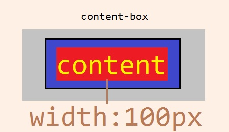

The Box Model
The first knowleged we have to understood in html is about the Box Model(CSS) and how to use.
- Gray box: Margin;
- Black box: Border;
- Blue box: Padding;
- Red box: Content area.
All in a html document is a element(<element-tag>)
and showed thru a Box-Model, our first task as a Front-End Engineer is
know how to manipulate this box.
A Box-Model have the property(CSS) box-sizing:,
and are two values to choose:
content-box;(default value)border-box;.
This property will set how Box-Model will displayed in screen. 
On image above, we see a Box-Model with 100px wide,
when property box-sizing: are content-box;,
width property will affect just the content size, remember that!.
Let supose, content has 100px width, padding 10px, border 1px and margin 10px, this Box-Model on image are 142px wide.
Display
Box-Model is the "shape" of an element, but element have a form to be displayed.
HTML tags are dispose in block content:
<ul><table><div><p><h1...h6>
Or inline content:
<img><bold><span><a>
| Differences of elements | |
|---|---|
| inline | block |
| no start on a new line | starts on a new line |
| width just enough to content | full width available of parent element |
| can be inside a block element | cannot be inside a inline element |
| can't be change width and height values | can be changed width and height values |
With property display: we can change how a element will
be displayed, as inline;, block;, inline-block;
or flex;.
But remember display: property will change how the element will be
renderized on browser. The flex; value, we will study foward.
Heading - Block example
Paragraph - Block example. Span - Inline example
Is important to know, a block-level element create a block with full width of its parent, preventing other elements from appearing on your horizontal side.
Flow of elements
Without CSS modifications, the default renderizing of elements in HTML
is top to bottom, left to right, in same order as they exist in document. But
with CSS is possible change values; of its properties:,
abling modify to any part of the HTML document the positions of a element.
To change this, position: property can be used with
this values:
static;the default value, element will positioned in normal flow of elements, in its order were be in HTML document.relative;relative will posite the element in same order of flow, however, is needed specify how much away oftop:; , bottom:; , left:; , right:;the browser will re-positioned the element;absolute;aboslute will remove the element from the normal flow and change how the element are positioned, you can specify were element can be positioned choosing the values of propertiestop:;, bottom:;, left:;, right:;, z-index:;;fixed;fixed don't will remove instantly the element of flow, changing justposition: fixed;, element will fixed on the original position, and be showed in all webpage height;sticky;sticky will stay the element in normal flow, but, when user scrolls down the webpage, if it exceeds the height of the element, the element becomes fixed to the screen and will remain at the height it occupies in the flow.
Z-Index
Property z-index: controls the "layer" of the element
will be part. The "first layer" and default value is 0, can be setted positive
and negative numbers, z-index: do not work in position: static;.
Float and Clear properties
We have learned about flow of elements and how to positionate then
in a html document with position: property. Now we'll see about
float: property, this property can be utilize to move a element
to all right possible or left.
Floated element will be remove from the normal flow, and be displayed as block on parent box.
Clear property is used when are elements displayed as
inline-block or one of they are "bumping" other floated element,
in this case clear: are used to don't bump
left; right; or both; sides.
This message are bumping to the floated square.
Inspect the orange rectangle above(#clear-paragraph), and change the
property clear: to value left;.
Display values
The principal ideia is,every element is displayed singleously, with default value, and this default value can be changed.
Levels inline and block were reviewed
previously, the first don't take all width available from parent element, the second
take all width available from parent element. Take a look in table
above.
Next we will see the inline-block value, this value is very usefull,
inline-block is a mix of "same line"inline property with
setted up width and height of block level.
The Flexible Box Layout or the flexbox is other ideia of how
a element can be displayed. In display: property we can change to
flex; value. Is two elements types of flexbox:
- flex containers: is a element that are parent for a child elements;
- flex items: is a element that are child for a parent element.
As a Flex Container, the element still is block-level, however, its childs
or flex items, will display as inline level streching to container's
width.
Another possibility to display as flex is inline-flex, this value
will display all flex containers in same line. Childs of its parents will be showed has
the normal flow of elements. The property justify-content:
do changes in the flex items flow.
Now we will see all commonly values for justify-content:
flex-start;flex items will be positioned in order, starting from the left of the parent container, with no extra space between or before them.flex-end;flex items will be positioned in order, with the last item starting on the right side of the parent container, with no extra space between or after them.center;flex items will be positioned in order, in the center of the parent container with no extra space before, between, or after them.space-aroundflex items will be positioned with equal space before and after each item, resulting in double the space between elements.space-betweenflex items will be positioned with equal space between them, but no extra space before the first or after the last elements.
The justify-content make changes only on horizontal axis, for
vertical axis, CSS has the align-items: property, with this values to use:
flex-start;flex items will be positioned at the top of the parent container.flex-end;flex items will be positioned at the bottom of the parent container.center;flex items will be centered in the parent container.baseline;the bottom of the content of all flex items will be aligned with each other.stretchif possible, the items will stretch from top to bottom of the container (this is the default value; elements with a specified height will not stretch; elements with a minimum height or no height specified will stretch).
Knowning where to positionate flex items, we need to know how re-size it, for this
property flex-grow: can be use to select specified flex item.